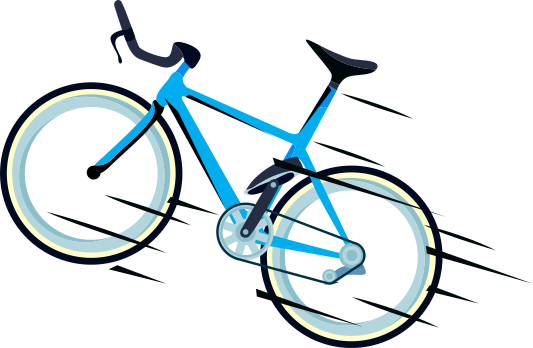

Suele existir una gran distancia entre las comunidades y sus administraciones locales. Las y los ciudadanos
no se sienten escuchados ni tomados en cuenta y frente a las promesas electorales que no se cumplen y los
casos de corrupción, la desconfianza es alta y generalizada. Por su lado las administraciones locales no
aplican ni promueven realmente los diferentes mecanismos y espacios de participación ciudadana que existen
en la normatividad colombiana.
La construcción de paz pasa por la mejora de la gestión pública para que refleje realmente las necesidades
de las comunidades y el restablecimiento de la confianza ciudadana en la institucionalidad y sus
representantes. Una vía interesante que lo permita es el control social, donde personas de la comunidad se
empoderan de su derecho a la participación y exigen de las personas gobernantes una rendición de cuenta de
calidad frente a su programa y su plan de acción. También el control social puede propiciar nuevos espacios
de proposición de la comunidad hacia sus representantes políticos y la acción pública
Sin embargo, suelen padecer de recursos y de los conocimientos necesarios para poder llevar a cabo
ejercicios contundentes de control social. Además, las administraciones suelen ser reacias a este tipo de
iniciativas de participación y no facilitan la comunicación y la información necesaria.
Desde el 2011, Fundación PLAN y la Corporación FORO Nacional por Colombia han apoyado los procesos de
control social en las comisiones ciudadanas de 8 departamentos del Norte del Cauca, Buenos Aires, Suarez,
Padilla, Puerto Tejada, Guachené, Villa Rica, Caloto y Corinto y uno del Valle del Cauca (Jamundí). A través
del proyecto Usa tu Poder para Construir Paz, se ha apoyado el control soci al de varios ciclos de gestión,
en el 2016, 2017 y 2018.
El ejercicio de control social supone tener conocimientos técnicos sobre los diferentes temas de la gestión pública. También, conocimientos repecto a las técnicas de ciencias sociales que permiten recolectar la información necesaria al seguimiento de esta gestión: aplicación de encuestas y análisis de la información, realización de entrevistas, redacción de informes.
Leer másEn 2015, 2016 y 2017, las Comisiones Ciudadanas elaboraron un informe anual de seguimiento ciudadano a la gestión de cada administración municipal en cuanto al cumplimiento a los compromisos adquiridos con la ciudadanía en materia de infancia, adolescencia, juventud, mujeres y temas claves del Acuerdo de Paz como desarrollo rural y reintegración.
Leer más